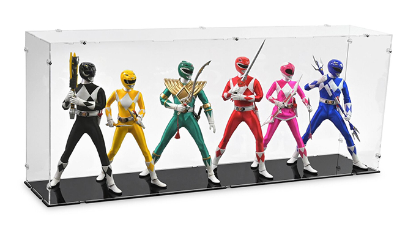

Zyuranger Episodic Review
The ERNALYSIS
Here are some of my favorites from the series
Super Sentai is an awesome series that serves as the foundation for almost every kid born in the 90's.
Take a stroll down memory lane with some popcorn, maybe a couple of brews, and a couple of hours of free time.
This is the series that spawned the creation of the Saban Series MMPR in 1993. While I thoroughly enjoyed the American series, I found this series to be better and more dynamic.
The Colorful Ones

The Hate Filled Brother's Sword
- adds drama to the series
- draws on personal sibling rivalries
- action-packed from start to finish
Clay Monsters, New & Improved
- Halloween-themed
- Uncovers a multi-layered plot
- Fun with a mysterious component
Reborn! The Ultimate God
- Character development with Burai and Geki
- The two brothers are able to have an adventure together
- Leaves you with a sense of hope
- Questlike experience that puts the viewer in the action as well
Burai Dies...
- One last battle with Burai fighing to the end
- Bittersweet ending with an ontological perspective
- We see a transfer of power, leaving a bit of Burai on Earth
Long Live the Dinosaurs
- The final battle with Burai's spirit involved
- Fitting ending for Bandora, also a bittersweet ending
- There's a general feeling of eternal life and recycling over the years
- Leaves the viewer with a sense of accomplishment
Thank you for taking the time to check out my episodic review of Zyuranger.
I've been wanting to do these critiques for so long and I am glad I have the chance to put these up!
Check out for more info
Click Here!